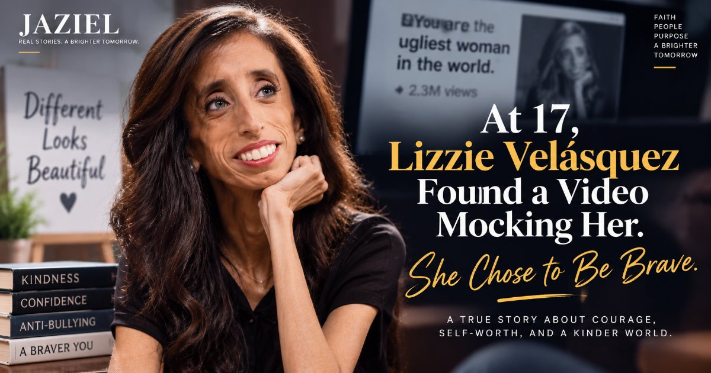
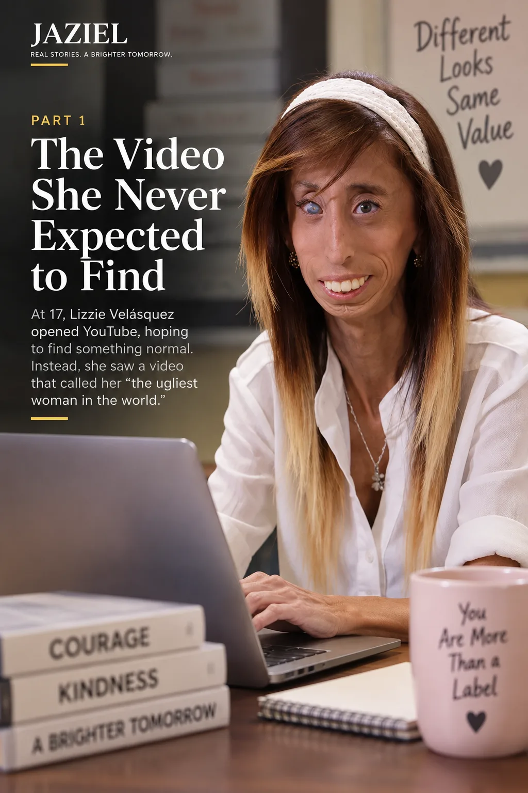
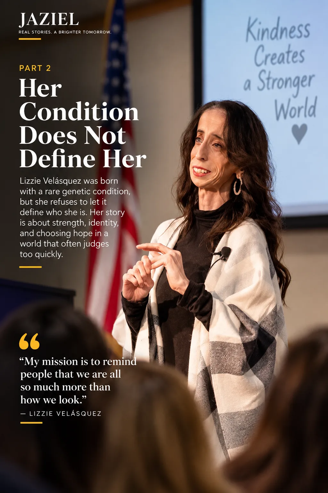
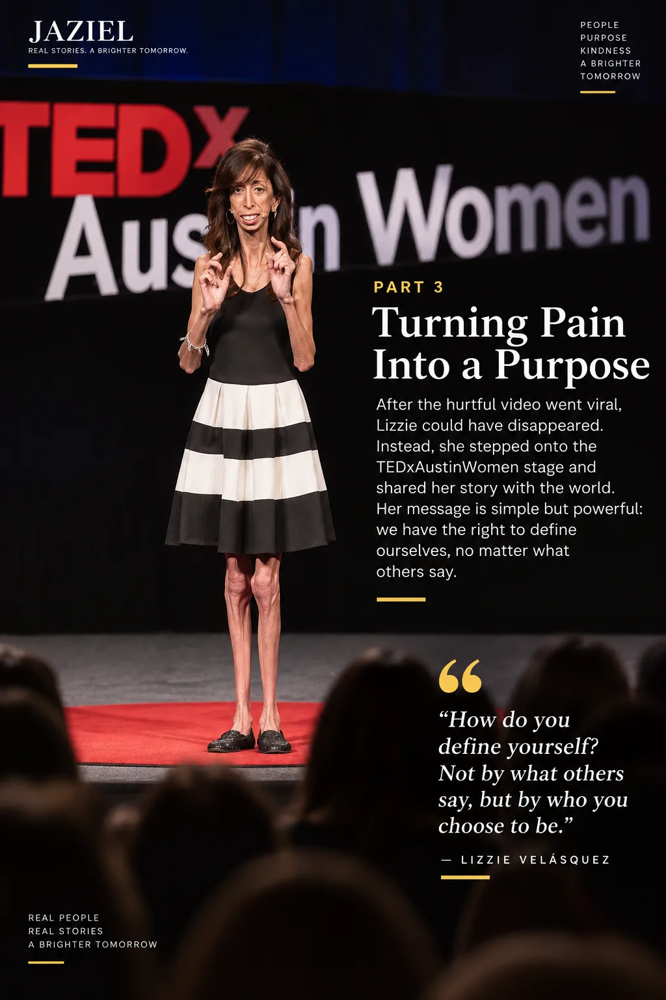
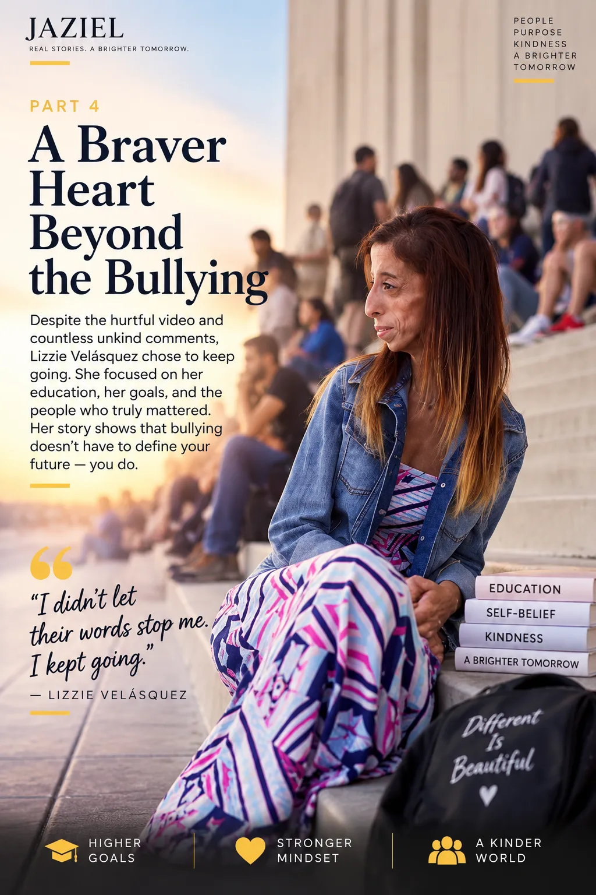
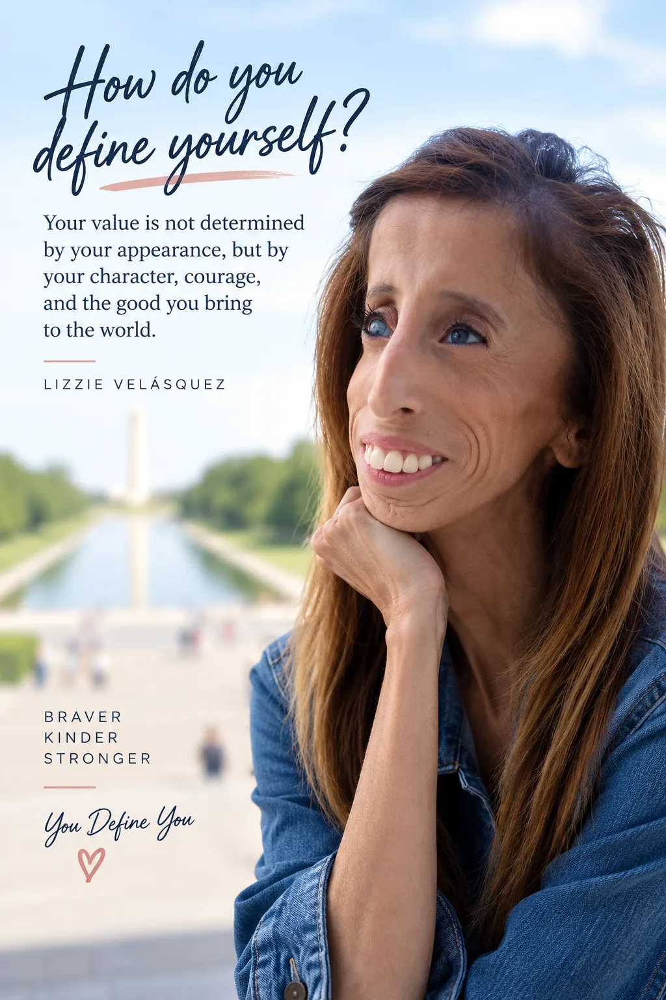
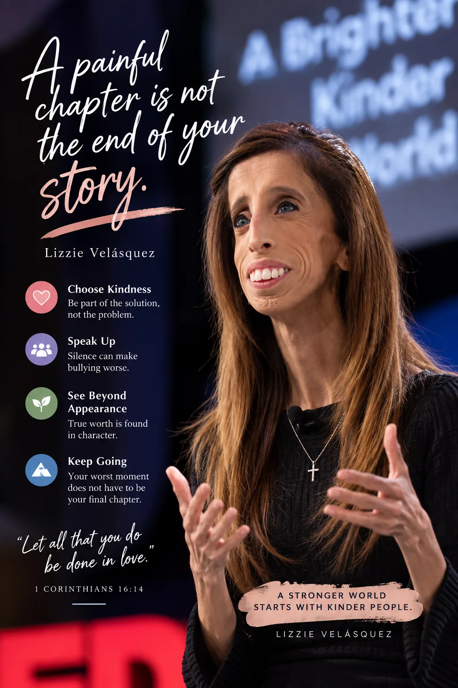

At 17, Lizzie Velásquez Found a Video Mocking Her. She Chose Courage.
A cruel video changed Lizzie Velásquez's life. What happened next became a powerful story about courage, self-worth, kindness, and refusing to let strangers define who you are.
By Jaziel Story · 6 min read · 2026-09-14

At just 17 years old, Lizzie Velásquez opened YouTube expecting to find something ordinary. Instead, she discovered a short video using an image of her and labeling her as the "World's Ugliest Woman." The video had already been viewed millions of times. What followed was a flood of cruel comments attacking her appearance and questioning her right to exist. For Lizzie, the experience was devastating. But it eventually became the turning point that helped her decide something important: other people's cruelty would not be allowed to define her identity.
The Video She Never Expected to Find
Lizzie had already experienced people staring, pointing, and making hurtful comments because she looked different. But discovering the YouTube video at 17 brought that cruelty to a completely different level.
According to reporting on her story, the clip was only a few seconds long, but it attracted millions of views and thousands of comments. She searched the comments hoping that someone might defend her. Instead, she found an overwhelming amount of hatred.
That moment showed her one of the darkest sides of the internet: behind a screen, people can forget that the person they are attacking is a real human being with feelings, family, dreams, and a future.
The experience hurt deeply. But it also forced Lizzie to confront a question that would shape the rest of her life: Would she allow strangers on the internet to decide who she was?

Lizzie Velásquez turned a painful experience with online bullying into a message of courage and kindness.
A Rare Condition Did Not Define Her
Lizzie was born with an extremely rare genetic condition associated with Marfanoid-progeroid-lipodystrophy syndrome. Her condition prevents her from gaining weight normally and has affected other aspects of her health, including her vision.
But her medical condition is only one part of her story.
From childhood, Lizzie had to deal with people focusing on what made her look different rather than seeing the person behind her appearance.
Her TED talk later described how difficult it was to grow up facing negative reactions from other people. Yet she also explained how she learned to take control of the way she defined herself.
Her story is not about pretending that bullying does not hurt. It is about refusing to let someone else's cruelty become the final definition of your life.

Her public speaking helped turn her personal experience into an anti-bullying message.Continue Reading →
Turning Pain Into Purpose
After the viral bullying experience, Lizzie could have disappeared from the public eye. Instead, she moved in the opposite direction.
She began speaking publicly about bullying, confidence, and self-worth. She wrote books, became a motivational speaker, and eventually shared her story on the TEDxAustinWomen stage.
Her TEDx talk, "How Do You Define Yourself?", became one of the recognizable parts of her story. Her message centered on rejecting hateful perspectives and embracing self-definition.
The transformation was not instant. Lizzie still had to live with the emotional impact of what happened to her. But she found a way to turn an experience meant to humiliate her into a reason to help other people.
That is what makes her story so powerful: the people who tried to reduce her to a cruel label did not get the final word.

Lizzie shared her story and challenged audiences to consider how they define themselves.
From Bullying Target to Anti-Bullying Advocate
Lizzie's story eventually became larger than her own experience.
She used her public platform to speak against bullying and encourage people to think about the consequences of their words. Her life and activism were also documented in the film "A Brave Heart: The Lizzie Velásquez Story."
She has continued to speak about kindness, confidence, and the importance of refusing to judge people based only on appearance.
Her message is especially relevant in the age of social media, where one post can reach thousands or millions of people within hours.
A comment that takes five seconds to type can stay with another person for years. Lizzie's journey reminds us that the internet can be used to tear people down—but it can also be used to give people hope.

Her advocacy encourages people to choose empathy instead of judging others by appearance.Continue Reading →
The Question Lizzie Asked the World
The title of Lizzie's TEDx talk asks a question that reaches far beyond her own story: How do you define yourself?
Is your identity determined by your appearance? By the opinion of strangers? By a mistake? By something cruel someone said about you? Or can you choose your own definition?
Lizzie chose the last one.
Her story does not mean that painful words suddenly stop hurting. It means that pain does not have to become the author of your future.
You can acknowledge what happened without allowing it to decide what happens next.

Lizzie Velásquez challenges people to define themselves by their character and courage, not by the opinions of others.
What Her Story Can Teach Us Today
Lizzie Velásquez's story offers several lessons for an online world that often moves faster than empathy.
First, words have consequences. A joke to one person can become a wound that another person carries for years.
Second, appearance is not identity. A person's value cannot be measured by whether they fit someone else's idea of beauty.
Third, silence can make bullying worse. When people see cruelty online, choosing kindness—or simply refusing to participate—can matter.
Finally, your worst moment does not have to be your final chapter. Lizzie was once the target of a viral video created to ridicule her. She later became a motivational speaker, author, filmmaker subject, and anti-bullying advocate.
The same internet that once amplified cruelty also helped amplify her message of courage.

Lizzie’s story reminds us that a painful chapter does not have to define the rest of our lives.
Let all that you do be done in love.
1 Corinthians 16:14
Lizzie Velásquez did not choose the condition she was born with. She did not choose the cruel video that millions of people watched. And she certainly did not choose the hateful comments that followed. But she chose what she would do next. She chose to speak. She chose to encourage others. She chose to turn pain into purpose. And perhaps the most important lesson is this: someone else's opinion of you does not have to become your opinion of yourself. If you have ever been mocked, rejected, or made to feel like you were not enough, remember Lizzie's question: How do you define yourself? The answer does not belong to the crowd. It belongs to you.